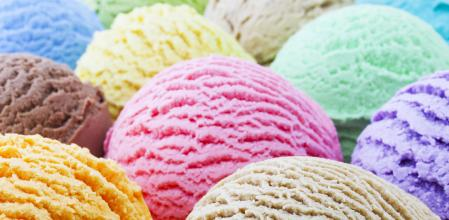

Historia del helado: el postre congelado
Algunos historiadores culinarios dan el crédito de la invención del helado a la cultura china. Ellos descubrieron que el hielo podía usarse no solo para conservar por más tiempo sus alimentos, también tomaban una bola de nieve de montaña y le agregaban un poco de limón, con lo que, técnicamente, inventaron el primer raspado.
Desde hace 4 mil años se tiene registro de una combinación más sofisticada: crema de arroz, hielo, especias y leche; es decir, el primer helado.
Como su preparación no era sencilla, esta exquisitez era exclusiva para la clase alta, por lo que los raspados eran un postre más accesible para las clases bajas.
No obstante, en Italia también surgió un fenómeno interesante, pero hasta el año de 1660: un ciudadano conocido como Procopio inventó una máquina cuyo objetivo era homogeneizar fruta con hielo y azúcar, con lo cual se obtenía una crema helada, muy similar a la que se conoce actualmente.
Pero el invento de Procopio no se popularizó en Italia, sino en Francia, donde abrió una cafetería parisina.
Sin embargo, algunos compatriotas de Procopio obtuvieron la receta, la cual guardaban celosamente. El secreto de su preparación no duró por mucho tiempo, pues vendedores ambulantes fueron los encargados de dar a conocer el “gelato” por el resto de Europa.